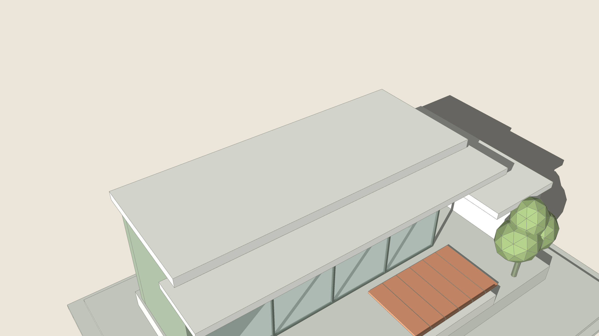
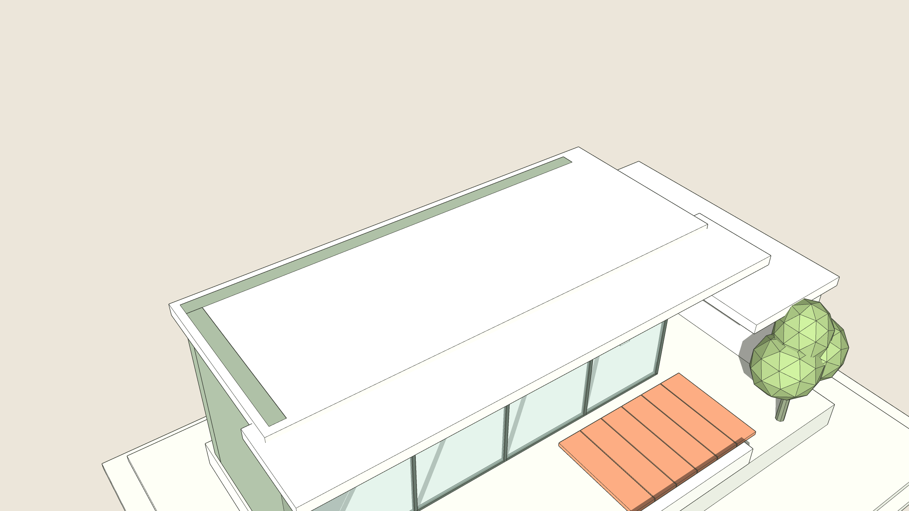
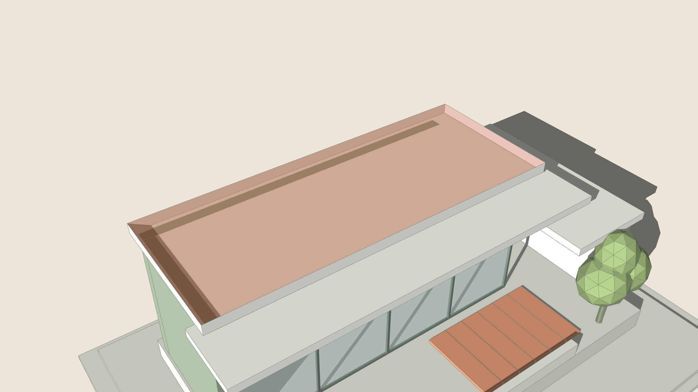

Offset every selected face outline with the mouse or a typed distance: inside, outside or both, several copies, remembered.


BeforeAfter
1 A flat roof slab.

2 Smart Offset: 300 mm inside, one click.3 ARQOPush the inner face down: a parapet.
How to use it
Select one or more faces.
Click Smart Offset and move the mouse inside or outside: the new outline follows.
Click, or type a distance and press Enter (300, or 300 x3 for three copies).
Hold Ctrl for both sides at once.
One Undo takes it all back.
Keys
Type a number
distance
x3
three copies
Ctrl
inside and outside
Esc
cancel
Ctrl+Z
one step back
Type in the measurements box
100mm
Offset 100 mm inside
-100mm
Offset 100 mm outside
x3
Three copies, keep previewing with the mouse
100mm x3
Three offsets at 100, 200 and 300 mm
600*2
Arithmetic: offset 1200 in the model's units
Good to know
Inside, each face is offset on its own; outside, faces that share an edge are offset as one outline.
Before you click, the card says what will be refused or skipped at this distance.
An offset that would cut into a hole, overlap another offset or land on an existing face is refused whole: nothing changes and the tool stays for another distance.
Offsets too narrow for their face are skipped; arcs stay arcs where they can, else become lines or sharp corners, and the report says so.
New faces keep the source face's material, tag, attributes and facing. Distance, side and copies (up to 20) are remembered. One Undo removes it.
Always
One Undo takes the whole action back.
Shared components: you choose this copy or all copies.
The result is told in plain words; a refusal changes nothing.